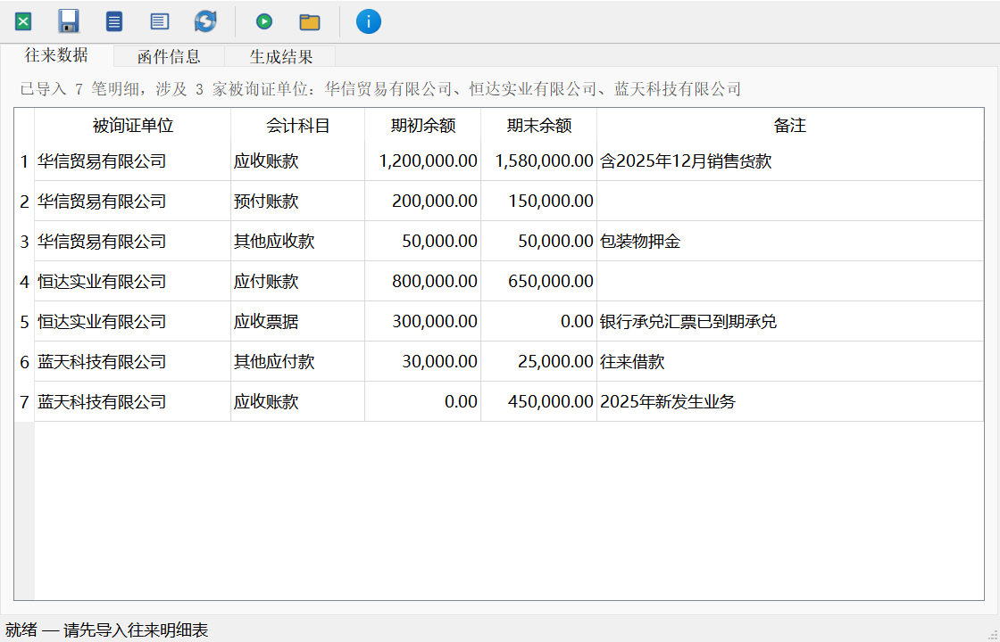

一个给审计同行用的免费小工具：导入往来明细表，按被询证单位批量生成询证函 Word 文档。 把手工逐户复制粘贴、拼函证的时间省下来。数据全程在你自己的电脑上处理，不经任何服务器。
↓ 下载工具包（58.4 MB）
包内含：询证函生成工具.exe（v1.0，2026-09-14 构建）· 往来明细表模板 · 询证函模板 ×2
界面预览

它能做什么
- 导入整理好的往来明细表（Excel），自动按被询证单位 + 会计科目归集
- 同一单位的多笔余额、多个科目自动汇总成一封函，含期初、期末余额与备注
- 基于 Word 模板生成，函件格式可在模板中自行调整（包内附两版模板）
- 纯本地运行：不需要联网，明细数据不出你的电脑
使用步骤
- 下载工具包，解压到任意文件夹（别在压缩包里直接运行）；
- 打开「往来明细表模板.xlsx」，按模板列示的格式填写往来明细并保存；
- 运行「询证函生成工具.exe」，在「往来数据」页导入填好的明细表；
- 在「函件信息」页补全函件要素（如函证基准日、函件编号等）；
- 在「生成结果」页生成询证函 Word 文档，逐函核对后再打印、盖章、寄发。
首次运行提示「Windows 已保护你的电脑」怎么办
本工具未购买代码签名证书（个人免费工具，证书费用不划算），Windows SmartScreen 会拦截未签名程序。 点击「更多信息」→「仍要运行」即可。请务必只从本页面下载工具包， 不要使用来路不明的转载版本。
更新日志
- v1.0（2026-09-14 构建，2026-09-22 发布）：首个公开版本。
免责声明：本工具仅供审计工作辅助，其输出结果不能替代必要的审计程序与职业判断，
询证函发出前请务必逐函核对单位名称、科目、余额与函证基准日等信息。因使用本工具产生的任何后果由使用人自行承担。
工具运行过程中不收集、不上传任何数据。